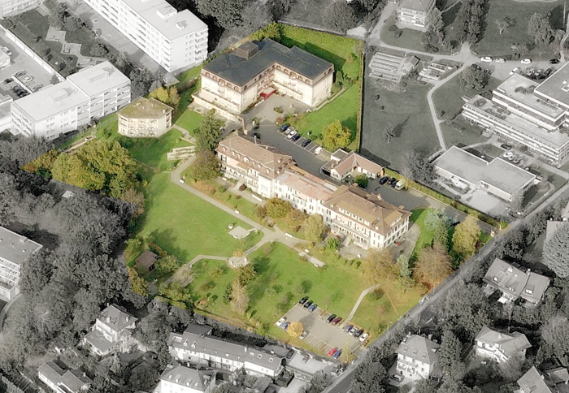
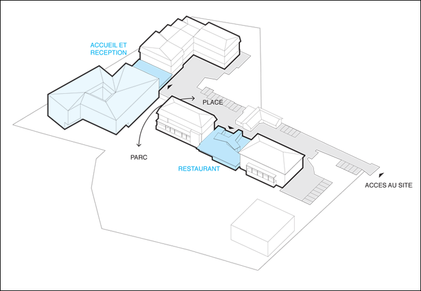
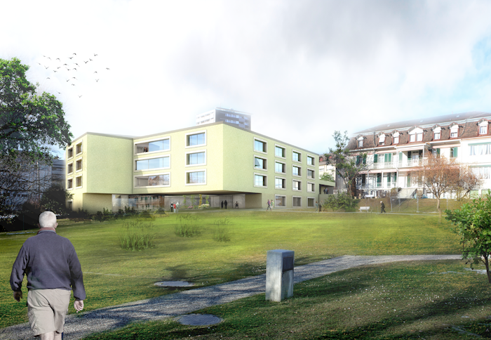
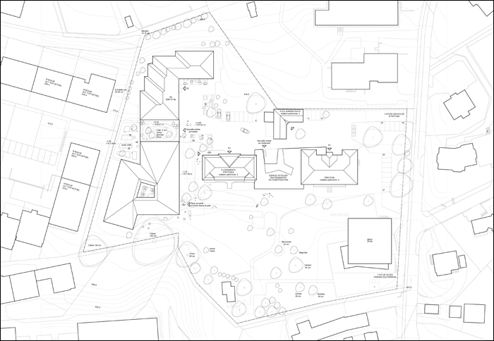
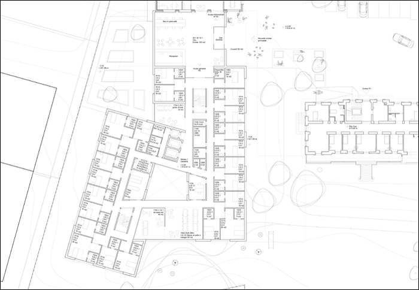
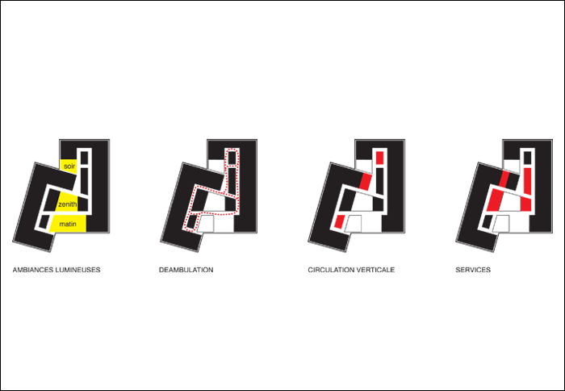
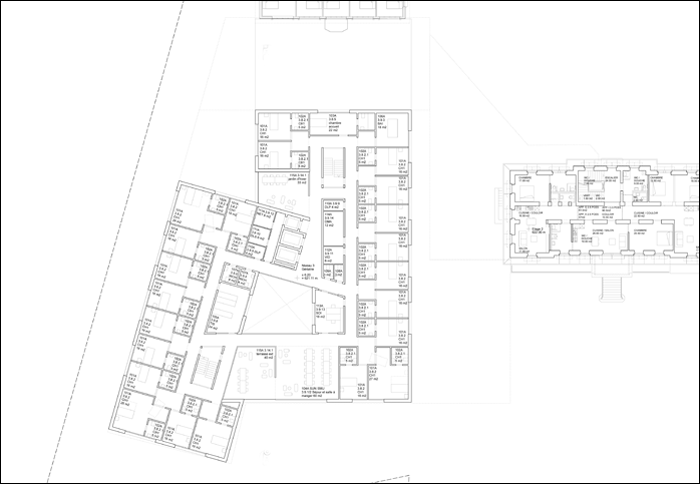
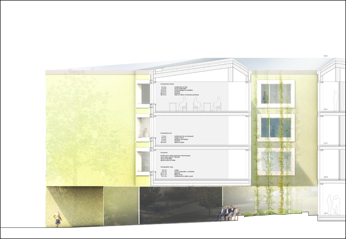
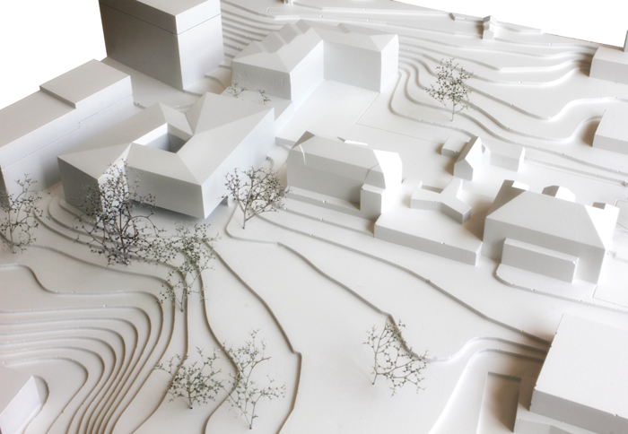

Project: FONDATION LA ROZAVERE, LAUSANNE










Project: FONDATION LA ROZAVERE, LAUSANNE
Location: Chailly, Lausanne (VD)
Customer: Fondation la Rozavère, Lausanne
Program: Elderly home, extension
Budget: 15’000’000 CHF
Date: 2015
Type: open competition
Team: NYX architectes, SIMA/BREER (landscape architect)
Images: NYX architectes